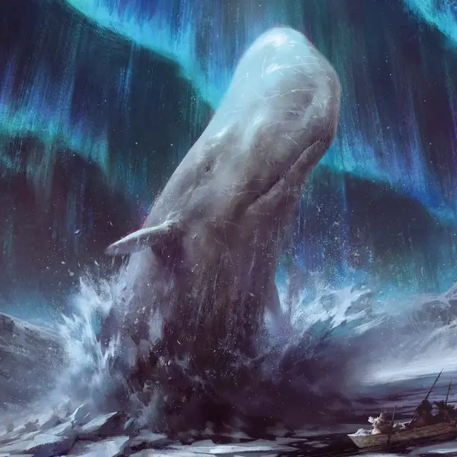

Кашалот
Sperm Whale
Громадный Зверь, без мировоззрения

Класс Доспеха 13 (природный доспех)
Хиты 189 (14к20 + 42)
Скорость 0 футов, плавая 60 футов
| мод | спас | ||
|---|---|---|---|
| СИЛ | 26 | +8 | +8 |
| ЛОВ | 8 | −1 | −1 |
| ТЕЛ | 17 | +3 | +3 |
| мод | спас | ||
|---|---|---|---|
| ИНТ | 3 | −4 | −4 |
| МДР | 12 | +1 | +1 |
| ХАР | 5 | −3 | −3 |
Чувства слепое зрение 120 футов, пассивное Восприятие 11
Опасность 8 (3900 опыта)
Бонус мастерства +3
Особенности
Эхолокация. Кашалот не может использовать слепое зрение, будучи оглохшим.
Задержка дыхания. Кашалот может задержать дыхание на 90 минут.
Острый слух. Кашалот совершает с преимуществом проверки Мудрости (Восприятие), полагающиеся на слух.
Действия
Мультиатака. Кашалот совершает две атаки: одну Укусом и одну Хвостом.
Укус. . Рукопашная атака оружием: +11 к попаданию, досягаемость 5 фт., одна цель. Попадание: 21 (3к8 + 8) колющего урона и если цель существо Большого и менее размера оно должно преуспеть в спасброске Ловкости Сл 14, иначе будет проглочено кашалотом. Проглоченное существо получает полное укрытие от атак и других эффектов за пределами кашалота и получает 3 (1к6) урона кислотой в начале каждого хода кашалота.
Если кашалот получает за один ход 30 и более единиц урона от проглоченного им существа, то он должен преуспеть в спасброске Телосложения Сл 16, иначе в конце этого хода изрыгнет все проглоченные им существа, которые падают ничком в свободном пространстве в пределах 10 футов от кашалота. Когда кашалот умирает, проглоченное им существо, используя 20 футов своего передвижения может прорваться наружу из его трупа, падая при этом ничком.
Хвост. Рукопашная атака оружием: +11 к попаданию, досягаемость 15 фт., одна цель. Попадание: 18 (3к6 + 8) дробящего урона, или 37 (6к6 + 16) дробящего урона если целью является объект.
Описание
Кашалоты — это имеющие зубы водные млекопитающие, вырастающие до 70 футов в длину. Их естественными врагами помимо китобоев являются другие морские левиафаны, такие как дракочерепахи и кракены.